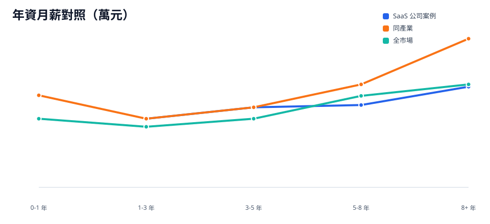
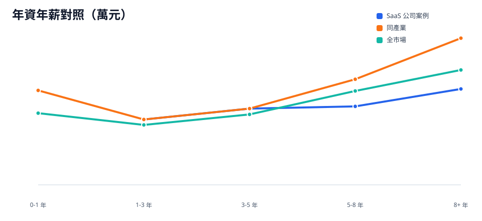

這頁把一間 SaaS 公司的薪資樣本當作案例，示範如何用同產業與全市場基準判讀公司薪資位置。公司樣本數為 22 筆。
分析見解
- 案例公司月薪中位數為 7 萬、年薪中位數為 90.3 萬；年薪低於同產業中位數 112 萬 21.7 萬。
- 1-3 年與 3-5 年區間的公司年薪中位數分別為 78 萬與 91 萬，與同產業相同；早中期薪資位置貼近同產業基準。
- 5-8 年公司年薪中位數為 93.6 萬，低於同產業 126 萬；8+ 年為 114.4 萬，低於同產業 175 萬。資深階段的薪資上限是主要差距。

月薪折線用來看各年資區間是否貼近同產業基準。

年薪折線納入 bonus 影響；資深區間差距會比月薪更明顯。
整體對照
| 指標 | SaaS 公司案例 | 同產業 | 全市場 |
|---|---|---|---|
| 樣本數 | 22 | 107 | 514 |
| 月薪中位數 | 7 萬 | 8.1 萬 | 6.5 萬 |
| 年薪中位數 | 90.3 萬 | 112 萬 | 91 萬 |
| 月薪差距（相對同產業） | -1.1 萬 | - | - |
| 年薪差距（相對同產業） | -21.7 萬 | - | - |
年資對照
| 年資 | SaaS 公司案例樣本 | SaaS 公司案例月薪中位數 | SaaS 公司案例年薪中位數 | 同產業樣本 | 同產業月薪中位數 | 同產業年薪中位數 | 全市場樣本 | 全市場月薪中位數 | 全市場年薪中位數 |
|---|---|---|---|---|---|---|---|---|---|
| 0-1 年 | 0 | - | - | 12 | 8.1 萬 | 112.7 萬 | 72 | 6 萬 | 85.5 萬 |
| 1-3 年 | 7 | 6 萬 | 78 萬 | 28 | 6 萬 | 78 萬 | 123 | 5.3 萬 | 71.5 萬 |
| 3-5 年 | 5 | 7 萬 | 91 萬 | 20 | 7 萬 | 91 萬 | 122 | 6 萬 | 84 萬 |
| 5-8 年 | 4 | 7.2 萬 | 93.6 萬 | 31 | 9 萬 | 126 萬 | 116 | 8 萬 | 112 萬 |
| 8+ 年 | 6 | 8.8 萬 | 114.4 萬 | 16 | 13 萬 | 175 萬 | 72 | 9 萬 | 137.1 萬 |